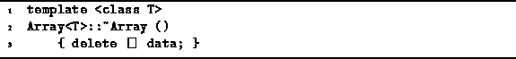
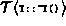
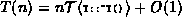

Data Structures and Algorithms
with Object-Oriented Design Patterns in C++
Data Structures and Algorithms
with Object-Oriented Design Patterns in C++
Program  shows
the definition of the Array<T> destructor.
The destructor simply invokes operator delete
to deallocate the storage used by the array elements.
In C++ two things happen when an array is deallocated.
First, the destructor for each element of the array is called one-by-one.
Second, the memory space used by the array is returned to the free store (heap).
shows
the definition of the Array<T> destructor.
The destructor simply invokes operator delete
to deallocate the storage used by the array elements.
In C++ two things happen when an array is deallocated.
First, the destructor for each element of the array is called one-by-one.
Second, the memory space used by the array is returned to the free store (heap).

Program: Array<T> Class Destructor Definition
If the running time of the destructor for an object of type T is , and assuming the time to return memory to the free store is a constant, the running time for the Array<T> destructor is . In C++ the destructor default behavior of the destructor for a built-in types is to do nothing. Therefore, in the case where T is a built-in type, T(n)=O(1).
 Copyright © 1997 by Bruno R. Preiss, P.Eng. All rights reserved.
Copyright © 1997 by Bruno R. Preiss, P.Eng. All rights reserved.